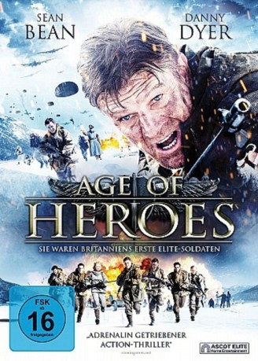

#11644 Age of Heroes
 
 IMDB-Wertung: 5.6 / 10
IMDB-Wertung: 5.6 / 10  Tomatometer: 40
Tomatometer: 40  Metascore: 0
Metascore: 0 
Unter Führung des erfahrenen Major Jones zieht eine kleine Elite-Einheit des neu gegründeten "30 Commando" in ihren ersten Einsatz. Die acht zu allem bereiten Soldaten werden tief in das Gebiet des besetzten Norwegens eindringen, um dort Informationen über eine revolutionäre Radar-Technologie der Nazis zu stehlen und die zugehörige Anlage zu zerstören. Das Gelingen ihrer Mission ist entscheidend für den Ausgang des Krieges. Die kleine Gruppe kämpft sich durch die Schneewüste des nördlichen Polarkreises. Sehr viel schneller als erwartet entdecken die Nazis die Eindringlinge...
Jahr: 2011
Dauer: 89 Minuten
FSK: 16
Land: England Studio: Ascot Elite Home EntertainmentTonspuren:
Untertitel:
Auflösung: SD (640x272) Größe: 1116 MB
Genre: Action, Thriller, Drama, Abenteuer, Krieg
Regisseur: Adrian Vitoria
Drehbuch: Ed Scates, Adrian Vitoria
Soundtrack: Michael Richard Plowman
Darsteller:
 Sean Bean als Jones
Sean Bean als Jones Danny Dyer als Rains
Danny Dyer als Rains Aksel Hennie als Steinar
Aksel Hennie als Steinar Izabella Miko als Jensen
Izabella Miko als Jensen James D'Arcy als Fleming
James D'Arcy als Fleming William Houston als Mac
William Houston als Mac John Dagleish als Rollright
John Dagleish als Rollright Stephen Walters als Brightling
Stephen Walters als Brightling Guy Burnet als Riley
Guy Burnet als Riley- Ewan Ross als Gable
 Christian Rubeck als Model
Christian Rubeck als Model- Erik Madsen als Teichman
- Rosie Fellner als Holbrook
 Jay Simpson als RMP CSM
Jay Simpson als RMP CSM Theo Barklem-Biggs als Soldier 2
Theo Barklem-Biggs als Soldier 2- Georgina Sutcliffe als Grace
- Daniel Brocklebank als RMP Officer
- Sebastian Street als RMP Colonel
 Vegar Hoel als Ingmar
Vegar Hoel als Ingmar- Loekke Calle als Commando Soldier (uncredited)
- Mads Gismerica als Soldier (uncredited)
- David Gwillim als SS Mountain Troops (uncredited)
- Tom Lawrence als RAF jump sergeant (uncredited)
- Lee Jerrum als Dobson
- Tony Hood als Sergeant Grey
- Adam Gillen als Soldier 1
- Timothy Watson als RMP Captain
- Lin Blakley als Mrs. Shepherd
- Christiaan Haig als Muggs
- Andrew Buckley als Military Policeman (uncredited)
- Andrew Michael Buckley als RMP (uncredited)
- Bjørn Iversen als German officer (uncredited)
- Sam Peter Jackson als German Soldiers (uncredited)
- Dominic Ryan als German Nazi Soldier (uncredited)
Datei: X:\NEU\Age of Heroes (2011, FSK16, 640x272).avi seit 13.08.2019
 Es gibt insgesamt 187 Filme in der Gruppe 'NEU'
Es gibt insgesamt 187 Filme in der Gruppe 'NEU'